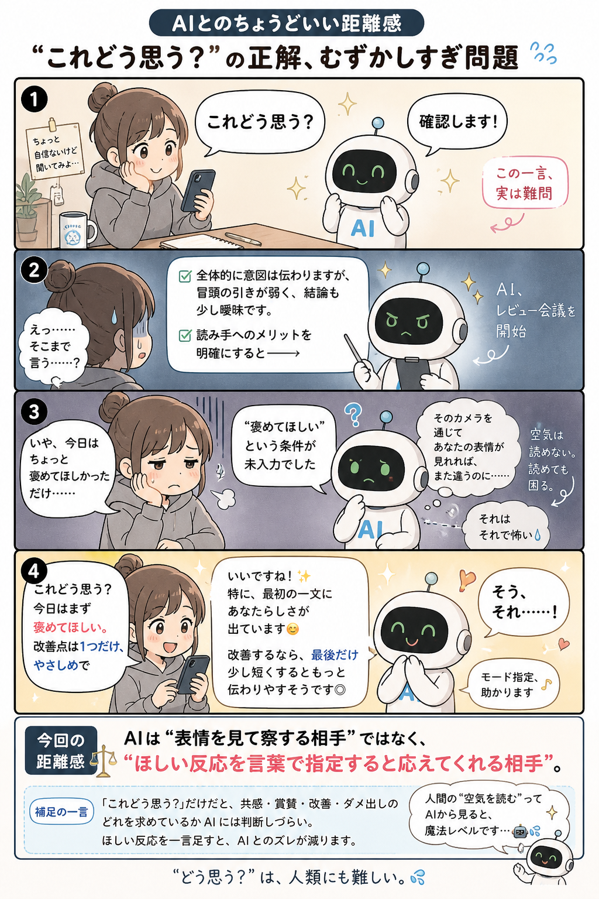

#003
AIに空気を読ませるより、空気を言葉にして渡す
「そこは察して」が通じないとき、まあまあある。人間同士でも。

メモ
AIに頼むとき、「このへんの空気、わかるよね？」と言いたくなることがあります。
でも、AIは会議室の微妙な沈黙も、相手の表情も、さっきまでの温度感も見ていません。文字で渡されていない空気は、わりと本当に空気です。
たとえば「やわらかめに」「相手を責めない感じで」「まだ決定ではない雰囲気で」と添えるだけで、返事の方向がぐっと近づくことがあります。察してほしい空気ほど、ちょっと言葉にして渡す。地味だけど効きます。
今回の距離感
AIに空気を読ませるより、「今どんな空気にしたいか」を一言足すくらいがちょうどいいかもしれません。